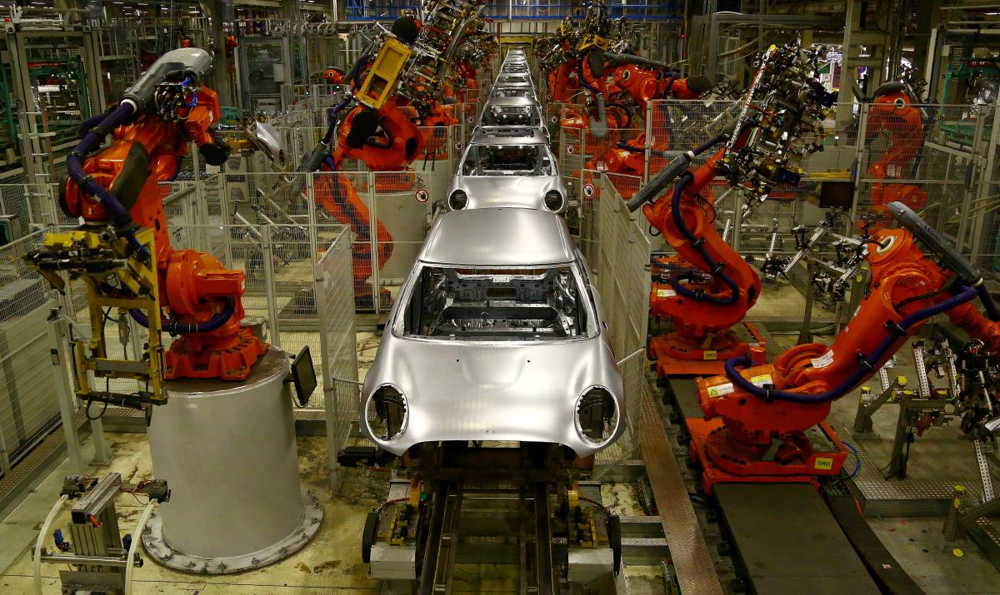

Машинострое́ние — это отрасль промышленности, занимающаяся проектированием, изготовлением и обслуживанием машин и оборудования. Технологические инновации в машиностроении играют ключевую роль в повышении производительности и качества производимых машин. Некоторые из таких инноваций включают в себя:
1. Численное управление обработкой (ЧПУ) - это технология, которая позволяет автоматизировать процессы обработки материалов с помощью компьютерных программ. Это позволяет улучшить точность и скорость производства.
2. Использование 3D-печати - это инновационная технология, которая позволяет создавать детали и компоненты машин прямо из цифровых моделей. Это упрощает процесс производства и позволяет создавать сложные детали.
3. Интеграция "Интернета вещей" (IoT) - это технология, которая позволяет собирать данные о состоянии и работе оборудования в реальном времени. Это позволяет предотвращать отказы оборудования и улучшать его производительность.
4. Использование роботизированных систем - автоматизация процессов с помощью роботов позволяет увеличить производительность и точность производства.
Эти и другие технологические инновации играют важную роль в развитии машиностроения, помогая повысить эффективность и качество производства машин и оборудования.
 тап по хамику аче всмысле ...КАЛЕСА 2 страницаОсновные правила Каждая команда сама создаёт шасси для своего автомобиля. Моторы могут быть приобретены у стороннего производителя. За соответствием машин техническому регламенту следят стюарды Международной федерации автоспорта. От каждой команды в каждом Гран-при должны[6] выступать два гонщика, при этом раскраска машин должна быть одинаковой (за исключением номеров). Гран-при проводится с пятницы по воскресенье (за исключением Гран-при Монако, где до 2022 года вместо пятницы свободные заезды проходили в четверг, а также Гран-при Лас-Вегаса, где в 2023 году впервые после Гран-при ЮАР 1985 года, все заезды проходят на день раньше: с четверга по субботу, и соответственно, основная гонка проходит в субботу, а не в воскресенье[7][8]) и состоит из свободных заездов, квалификации и гонки. Сезон состоит из различного количества Гран-при: от 7 в 1950 до 22 в 2021—2023 и обычно проводится с марта по ноябрь. За первые 10 мест на финише гонки пилоты и команды получают очки по системе 25—18—15—12—10—8—6—4—2—1. Одно дополнительное очко получает гонщик, прошедший самый быстрый круг в гонке (при условии финиша в «очковой зоне» — то есть в первой десятке финишировавших). Трое первых гонщиков поднимаются на подиум. В честь победителя звучит гимн государства, по лицензии автоклуба которого он выступает, а затем — гимн страны команды-победителя. Под страной команды-победителя подразумевается государство, автоклуб которого выдал ей лицензию на участие[9]. Если страна пилота и страна команды-победителя совпадают, гимн играется один раз. На некоторых Гран-при квалификация проходит в пятницу, а в субботу дополнительно проводится спринт — укороченная гонка примерно на 100 километров, — а также квалификация к нему. В таком случае основная квалификация распределяет места на основной гонке, а спринт (и квалификация к нему) оказывается отдельным мини-Гран-при, как некая «вещь в себе» в рамках гоночного уик-энда. За финиш в спринте на первых восьми местах гонщикам и командам начисляются очки по системе 8—7—6—5—4—3—2—1. Очки, набранные каждым пилотом во всех гонках в течение сезона, суммируются и используются для присвоения титула чемпиона мира по окончании сезона; очки всех выступавших за каждую команду гонщиков также суммируются и используются для определения команды-победителя в борьбе за кубок конструкторов. Флаги на трассе и их значения Основная статья: Гоночные флаги Флаг Цвет Значение Красный Остановка гонки или тренировочной сессии Зелёный Конец опасности / рестарт Жёлтый Предупреждение об опасности на трассе (локально или по всей трассе), также используется в режиме машины безопасности Голубой В гонке, приближение машины, опережающей гонщика на круг или более bordo Белый Медленная машина на трассе Чёрный Дисквалификация пилота из гонки bordo Клетчатый Финиш гонки или тренировочной сессии bordo Чёрно-белый Предупреждение за неспортивное поведение Чёрный с оранжевым кругом Машина имеет техническую неполадку и должна остановиться Красно-жёлтый Скользкое место (из-за масла или воды на трассе)